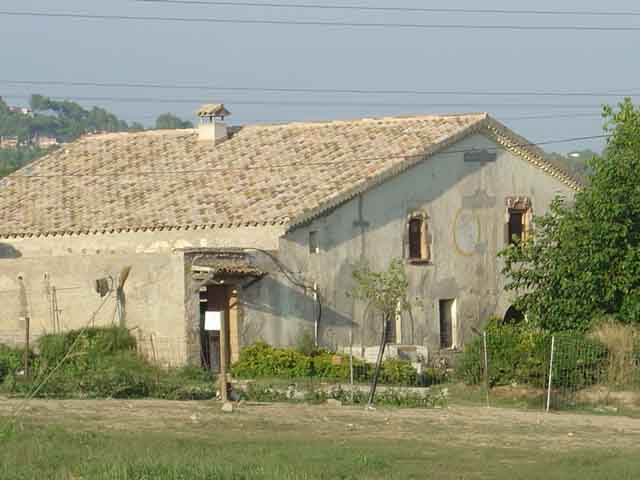
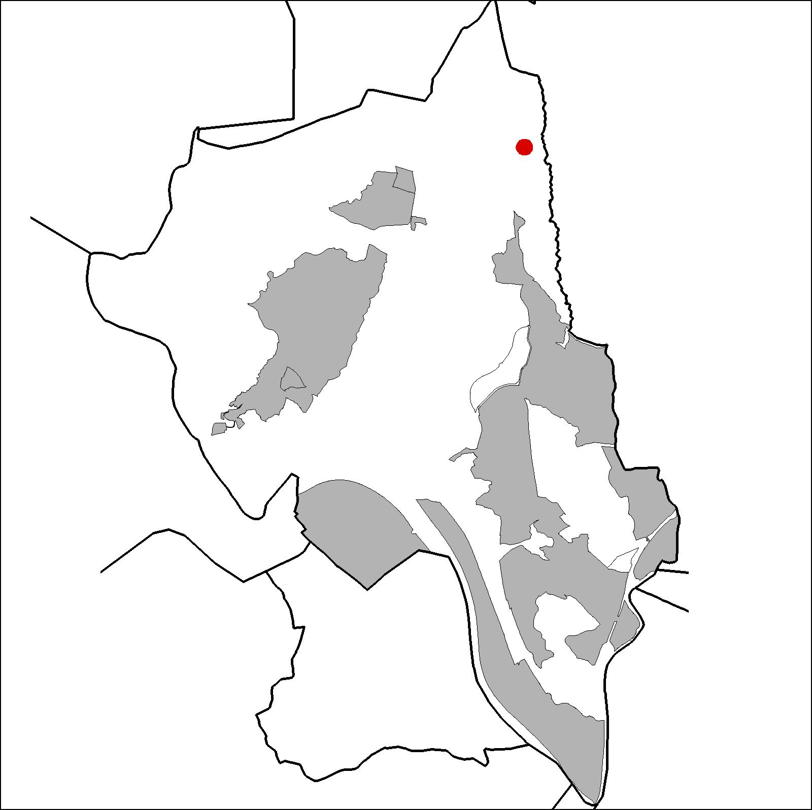

|  |
 |
Nom de l’element: Can Ribot
Clau d’identificació: B.1.06
Nucli o indret: Entre la carretera B-151 i el torrent de Can Canyadell.
UTM: X= 415.246, Y= 4.595.766, 210 m s.n.m..
Referència cadastral: Poligon 03, parcel·la 9502 (08053A00309502)
Règim del sòl: Sòl no urbanitzable.
1.1. Època de construcció i tipologia:
Típica masia catalana del segle XIV, formada per planta baixa i primera, i coberta a dues aigües. Els murs són de mamposteria i d’adobe i la coberta, de teula i fusta. La façana és de disposició assimètrica. El portal és de punt rodó adovellat. Els elements més característics es troben a les tres finestres del pis superior: presenten uns brancals i unes llindes esculpides amb petites columnes i formes de caps humans amb un estil gòtic tardà. Té una sèrie de cossos addicionats, com la vivenda del masover, el magatzem i la quadra. Al bosc de Can Ribot s’observen trossos de murs, relacionats amb el monestir de monges agustines, sota l’advocació de Santa Magadalena i Santa Margarida (1331). La pica beneitera es va guardar a la masia i l’origen dels elements de les seves finestres s’atribueixen al monestir.
1.2. Estat de conservació:
En general presenta un bon estat de conservació. La teulada fou restaurada recentment.
1.3. Ús actual:
Habitatge, agrícola i ramader (cavalls).
1.4. Accés:
Accés fàcil des de camí de terra que neix a la carretera B-151.
Masia catalana del segle XIV, amb uns finestrals caracteritzats per unes llindes esculpides amb columnes i cap humans, d’estil gòtic tardà.
3.1. Usos admesos:
Habitatge rural (màxim 3 habitatges); residencial; hoteler (excepte aparthotel; i amb un màxim de 30 places); oficines i serveis; industria vinculada a productes del camp (industrial, categoria 1ª); educatiu; recreatiu cultural i social; recreatiu de restauració; esportiu.
3.2. Condicions d’ordenació:
Segons Pla Especial a redactar.
3.3. Accés i serveis:
Camí de terra que neix a la carretera B-151.
BCIL (Bé Cultural d’Interes Local)